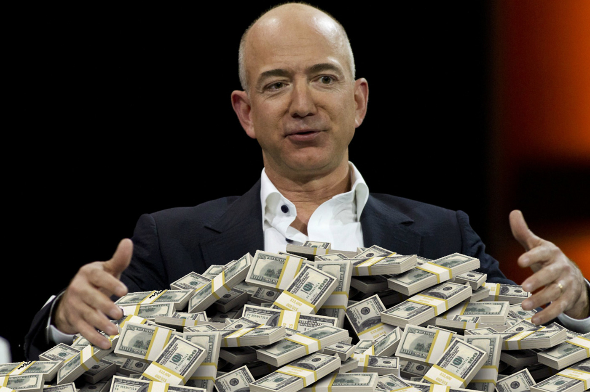

COVID-19 Billionaires: Who Are the Virus Profiteers?
Amazon’s Jeff Bezos has increased his wealth by $10 billion since the United States was hit by COVID-19.Who else is profiting from the pandemic?
'The pandemic affects both the rich and the poor.''We’re all in this together.''Everyone has to do their part.'These phrases have been repeated ad nauseam since COVID-19 became a global pandemic.
They may seem like expressions of optimism and encouragement, but they are a lie.The vast majority of the population is suffering from unemployment, hunger, and higher infection rates as a result of being on the front lines of the fight against the pandemic.
In the United States, the richest nation in the world, more than 30 million people have applied for unemployment since the virus hit the country.At the other end of the spectrum, the fortunes of the country’s 629 billionaires (people with more than $1 billion in wealth) increased by $282 billion, an almost 10% gain, in 23 days according to a study conducted by the Institute for Policy Studies (IPS).The IPS also states that the three largest fortunes (those of Jeff Bezos, Bill Gates, and Warren Buffett) are equal to the wealth of the
poorest half of the population of the entire United States, that is, some 164 million people.Let’s say that again: 3 Americans have as much wealth as the bottom 164 million people in the U.S.
This is not to say that all billionaires are increasing their profits.
Forbes Magazine mourns the effects the virus is having on the ultra-wealthy: 'The world’s richest are not immune to the devastating impact of the coronavirus...The drop in the number of billionaires this year reflects the economic impact the pandemic is already having' said Kerry Dolan, Forbes assistant managing editor of wealth.267 people dropped off the billionaires list because their fortunes fell below $1 billion.It is likely that as the pandemic continues, these numbers will increase.But at least 8 people have exponentially increased their wealth since the virus began.
According to the report, eight capitalists managed to increase their wealth by more than $1 billion.Here are highlights of the information in the IPS report.
Jeff Bezos, owner of Amazon.His fortune has increased by $10 billion since the start of the pandemic in the United States on February 21 and by $25 billion since the beginning of the year.His net worth is equal to the GDP of Honduras.Yet, Amazon still fails to provide workers with PPE to prevent infection.Amazon has also ended a policy of unlimited
unpaid time off, forcing people to go back to work in dangerous conditions or lose their jobs.
Elon Musk, CEO of Tesla and owner of SpaceX.He initially said that 'the coronavirus pandemic is dumb' and later realized he could profit from it.He converted Tesla’s production and is now manufacturing ventilators.His wealth increased by $ 5 billion in less than a month.Now, he’s one of the major proponents for re-opening and is reopening Tesla in defiance of lockdown orders.
Mackenzie Bezos, Jeff’s ex-wife.They divorced last year, and she owns 4 percent of Amazon’s stock.She is a writer and 'philanthropist.'Since her divorce, she has launched donation events for the poor while amassing about $47.5 billion, $3.5 billion of which was made during the pandemic.How generous of her...
Eric Yuan, owner of Zoom.He made $ 2.58 billion thanks to the pandemic.He is one of the people who have most benefited from the social-distancing measures taken during the pandemic, since millions of people around the world need to communicate by video conferencing.
Steve Ballmer, former Microsoft CEO and owner of the Los Angeles Clippers.He holds a big part of the shares of Microsoft, which owns two other video-conferencing platforms that are increasingly used worldwide: Skype and Teams, the latter of which is used in business.He has made $2.2 billion during the coronavirus crisis.Ballmer has also been 'generous': he plans to donate $25 million to confront the pandemic, or about 0.04 percent of his wealth.
John Albert Sobrato, a Silicon Valley real estate developer whose companies own the headquarters of Google, Facebook, Netflix, and Apple.He made $2.07 billion during the pandemic.
Joshua Harris, an owner of Apollo Global Management, an investment fund with one of the world’s largest portfolios in alternative business management.It manages private equity funds, credit funds, real estate funds, and other investment vehicles.Basically, he’s in the business of speculation.His wealth increased by $1.72 billion during the pandemic.
Rocco Commisso: An Italian businessman who owns Mediacom, the fifth-largest cable company in the United States.He also owns two soccer teams, the New York Cosmos and the well-known Fiorentina, from Italy.He apparently made some financial transactions during the pandemic that earned him $1.09 billion.
In the 19th century, Marx said in the
Communist Manifesto that in capitalism, wealth is increasingly concentrated in just a few bourgeois hands, while the masses sink into poverty.This is all too clear right now.There are people waiting hours in line at food banks and 23% of households say they lack the money for food.
Marx also called on workers around the world to unite to end this brutal system of exploitation.As the economy re-opens because capitalists need our labor to make their profits, the role of our class, the working class, as the gravediggers of capitalism becomes as relevant as ever.
Posted On: 2020-05-12T00:00:00
Posted By: Javier Nuet

Content Date: 2020-05-12
Download Date: 2021-05-30
Document ID: L0C04CQC7